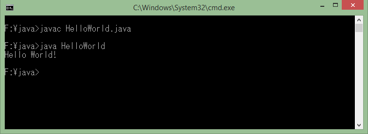

✸Java Cơ Bản
➪ Java là gì?
➪Lịch sử Java
➪Các tính năng của Java
➪Cài đặt môi trường Java (cho người mới bắt đầu)
➪Thiết lập PATH cho java
➪Chương trình Hello World
➪JDK, JRE và JVM
➪Biến trong java
➪Các kiểu dữ liệu trong java
➪Ép kiểu (Type casting)
➪Các toán tử trong Java
➪Hệ thống Unicode trong java
Java là gì? - Tại sao bạn nên học lập trình Java?
Nội dung chính
Java là gì?
Java là một một ngôn ngữ lập trình hiện đại, bậc cao, hướng đối tượng, bảo mật và mạnh mẽ. và là một Platform.
Platform: Bất cứ môi trường phần cứng hoặc phần mềm nào mà trong đó có một chương trình chạy, thì được hiểu như là một Platform. Với môi trường runtime riêng cho mình (JRE) và API, Java được gọi là Platform.
Ngôn ngữ lập trình Java ban đầu được phát triển bởi Sun Microsystems do James Gosling khởi xướng và phát hành vào năm 1995. Phiên bản mới nhất của Java Standard Edition là Java SE 8. Với sự tiến bộ của Java và sự phổ biến rộng rãi của nó, nhiều cấu hình đã được xây dựng để phù hợp với nhiều loại nền tảng khác nhau. Ví dụ: J2EE cho các ứng dụng doanh nghiệp, J2ME cho các ứng dụng di động.
Các phiên bản J2 mới đã được đổi tên thành Java SE, Java EE và Java ME. Phương châm của java là "Write Once, Run Anywhere" - viết một lần chạy nhiều nơi, nghĩa là bạn chỉ cần viết một lần trên window chẳng hạn, sau đó vẫn chương trình đó bạn có thể chạy trên Linux, Android, các thiết bị J2ME...
Các tính năng của Java
Ngôn ngữ lập trình java có các tính năng sau:
- Hướng đối tượng - Trong Java, mọi thứ đều là một Object. Java có thể dễ dàng mở rộng và bảo trì vì nó được xây dựng dựa trên mô hình Object.
- Nền tảng độc lập - Không giống nhiều ngôn ngữ lập trình khác bao gồm cả C và C ++, khi Java được biên dịch, nó không được biên dịch thành ngôn ngữ máy nền tảng cụ thể, thay vào mã byte - nền tảng độc lập. Mã byte này được thông dịch bởi máy ảo (JVM) trên nền tảng nào đó mà nó đang chạy.
- Đơn giản - Java được thiết kế để dễ học. Nếu bạn hiểu khái niệm cơ bản về OOP Java, sẽ rất dễ để trở thành master về java.
- Bảo mật - Với tính năng an toàn của Java, nó cho phép phát triển các hệ thống không có virut, giả mạo. Các kỹ thuật xác thực dựa trên mã hoá khóa công khai.
- Kiến trúc - trung lập - Trình biên dịch Java tạo ra định dạng tệp đối tượng kiến trúc trung lập, làm cho mã biên dịch được thực thi trên nhiều bộ vi xử lý, với sự hiện diện của hệ điều hành Java.
- Portable - Là kiến trúc tập trung và không có khía cạnh thực hiện phụ thuộc của đặc tả này làm cho Java khả chuyển. Trình biên dịch trong Java được viết bằng ANSI C, đó là một tập con POSIX.
- Mạnh mẽ - Java làm nỗ lực để loại trừ các tình huống dễ bị lỗi bằng cách kiểm tra lỗi tại thời gian biên dịch và kiểm tra lỗi tại runtime.
- Đa luồng - Với tính năng đa luồng của Java có thể viết các chương trình có thể thực hiện nhiều tác vụ đồng thời. Tính năng thiết kế này cho phép các nhà phát triển xây dựng các ứng dụng tương tác có thể chạy trơn tru hơn.
- Thông dịch - Mã byte Java được dịch trực tiếp tới các máy tính gốc và không được lưu trữ ở bất cứ đâu.
- Hiệu năng cao - Với việc sử dụng trình biên dịch Just-In-Time, Java cho phép thực hiện hiệu năng cao.
- Phân tán - Java được thiết kế cho môi trường phân tán của Internet.
- Năng động - Java là năng động hơn C hoặc C++ vì nó được thiết kế để thích nghi với môi trường đang phát triển. Các chương trình Java có thể mang một lượng lớn thông tin tại runtime mà có thể được sử dụng để xác minh và giải quyết các truy cập vào các đối tượng tại runtime.
Java được sử dụng để làm gì?
Trước khi tôi trả lời câu hỏi, Java được sử dụng để làm gì, hay lý do tại sao bạn nên chọn Java. Java rất phổ biến và đã thống trị lĩnh vực này từ đầu những năm 2000 đến nay 2020.
Theo tập đoàn SUN, hiện nay có khoảng 3 tỷ thiết bị đang chạy java.
- Desktop App như acrobat reader, media player, antivirus, ...
- Web App như irctc.co.in, javatpoint.com, ...
- Enterprise App như các ứng dụng về xử lý nghiệp vụ ngân hàng, ...
- Thiết bị Mobile như các ứng dụng Android.
- Hệ thống nhúng
- Smart Card
- Robot
- Game App
Các kiểu của Java App
Có 4 kiểu ứng dụng chính của java app:
1. Standalone App
Standalone App cũng được biết đến như Desktop App hoặc Window-based App. Để tạo ra ứng dụng kiểu này người ta thường sử dụng AWT, Swing hoặc JavaFX framework.
2. Web App
Web App là ứng dụng chạy trên server và tạo được các trang động. Hiện nay, servlet, jsp, struts, jsf, spring... là những công nghệ được sử dụng để tạo Web App trong java.
3. Enterprise App
Một ứng dụng dạng như Banking App, có lợi thế là tính bảo mật cao, cân bằng tải (load balancing) và clustering. Trong java, EJB được sử dụng để tạo các Enterprise App.
4. Mobile App
Mobile App là ứng dụng được tạo ra cho các thiết bị di động. Hiện nay Android và Java ME được sử dụng để chạy các ứng dụng này.
Java Platforms
Có 4 nền tảng Java:
1. Java SE (Java Standard Edition)
Java SE là một nền tảng lập trình Java. Nó bao gồm các API lập trình Java như java.lang, java.io, java.net, java.util, java.sql, java.math, v.v. Nó bao gồm các chủ đề cốt lỗi như OOPs, String, Regex, Exception, Inner classes, Multithreading, I/O Stream, Networking, AWT, Swing, Reflection, Collection, v.v.
2. Java EE (Java Enterprise Edition)
Đây là một nền tảng doanh nghiệp chủ yếu được sử dụng để phát triển các ứng dụng web và doanh nghiệp. Nó được xây dựng trên nền tảng Java SE. Nó bao gồm các chủ đề như Servlet, JSP, Web Services, EJB, JPA , v.v.
3. Java ME (Java Micro Edition)
Đây là một nền tảng vi mô chủ yếu được sử dụng để phát triển các ứng dụng di động.
4. JavaFX
JavaFX là một nền tảng phần mềm phát triển các ứng dụng Internet phong phú (Rich Internet Applications – RIAs) có thể chạy trên nhiều loại thiết bị, nhiều hệ điều hành khác nhau. JavaFX là một giải pháp công nghệ cho GUI trên nền tảng Java nhằm tạo giao diện đồ họa người dùng dựa trên Swing và Java2D.
Tại sao bạn nên học lập trình Java?
Ngoài việc độc lập nền tảng, phong cách "lập trình hướng đối tượng" của Java và sự hấp dẫn rất cao đối với các nhà tuyển dụng IT.
Như tên gọi của nó đã cho thấy, lập trình hướng đối tượng (OOP) sử dụng các đối tượng được định nghĩa đầy đủ - và các mối quan hệ giữa các đối tượng với nhau - để thực hiện các tác vụ khác nhau. Do nền tảng mô-đun tự nhiên của nó, OOP thường làm cho nó dễ dàng hơn, nhanh hơn và rẻ hơn trong phát triển và quản lý phần mềm. Cũng dễ hiểu khi những đặc điểm này buộc các tổ chức và doanh nghiệp ôm lấy Java trong vòng tay rộng mở, nâng ngôn ngữ lập trình này trở thành kỹ năng được mong muốn nhất của các nhà tuyển dụng.
Và trong khi Java là rất "hot" với các nhà tuyển dụng, nó cũng không kém phần nóng bỏng đối với những người thực sự viết ra các chương trình máy tính. Mức lương trung bình của một lập trình viên Java tại Mỹ là $88K đô-la (hơn 1,8 tỷ VNĐ/năm) và Java tạo ra một nguồn cảm hứng bất tận để thu hút rất nhiều người theo đuổi nghề nghiệp cùng với nó.
Điều kiện tiên quyết để học lập trình Java
Bạn nên có kiến thức cơ bản về lập trình C/C++, và kiến thức tốt cấu trúc dữ liệu và giải thuật.
Ví dụ về Java
Dưới đây là ví dụ về chương trình đơn giản trong java để in "Hello World"
public class HelloWorld { public static void main(String args[]){ System.out.println("Hello Java"); } }
Kết quả:
